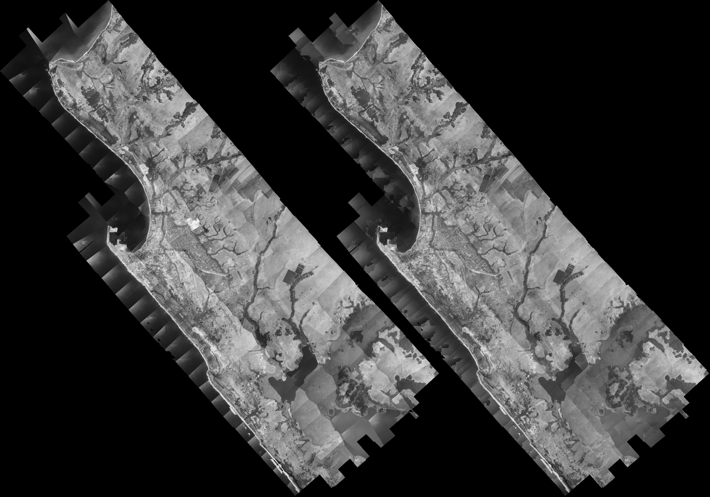
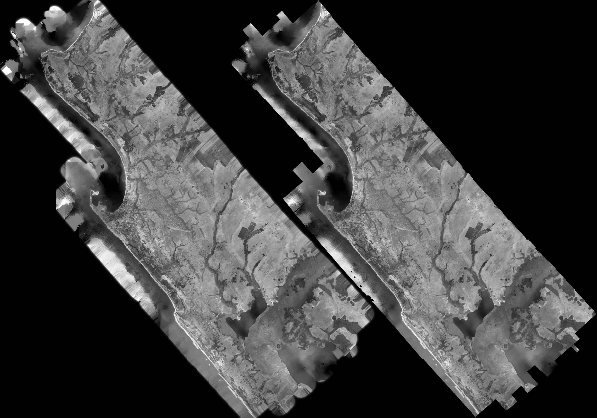
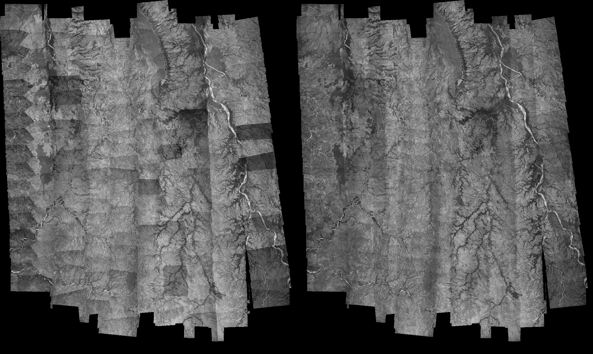
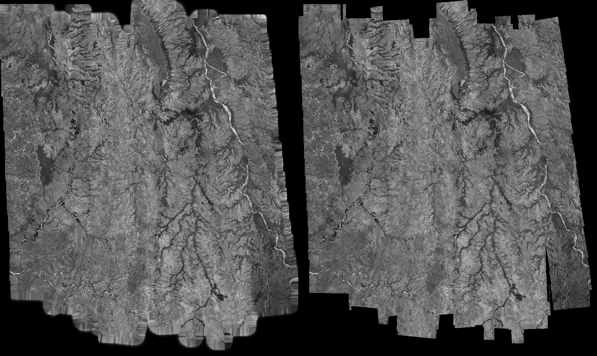

Cette page est en cours de construction et présente très brièvement des résultats de corrections radiométriques effectuées sur deux missions aériennes scannées : Pointe-Noire, Congo, 1978 et Madagascar 1949.
La figure ci-dessous représente les tableaux d'assemblages de la mission Congo 1978 avec, à gauche, un rendu
sans recouvrement des clichés (cellules de Voronoï) et, à droite, avec recouvrement :

La figure ci-après représente, à gauche, le tableau d'assemblage des clichés avec recouvrement après corrections
radiométriques en 2 étapes (Wallis amélioré par ACP et égalisation inter-clichés itérative) et, à droite, le tableau
d'assemblage sans recourvrement des clichés après un lissage / filtrage de Wallis des clichés d'origine avec pour
référence le tableau d'assemblage de gauche (celui avec recouvrement) :

Enfin, voici les mêmes figures que précédemment mais avec les données de Madagascar 1949 :

